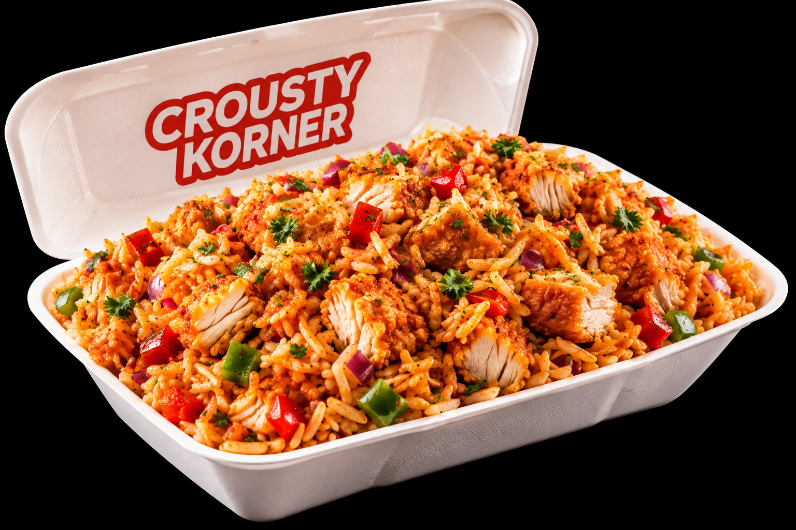
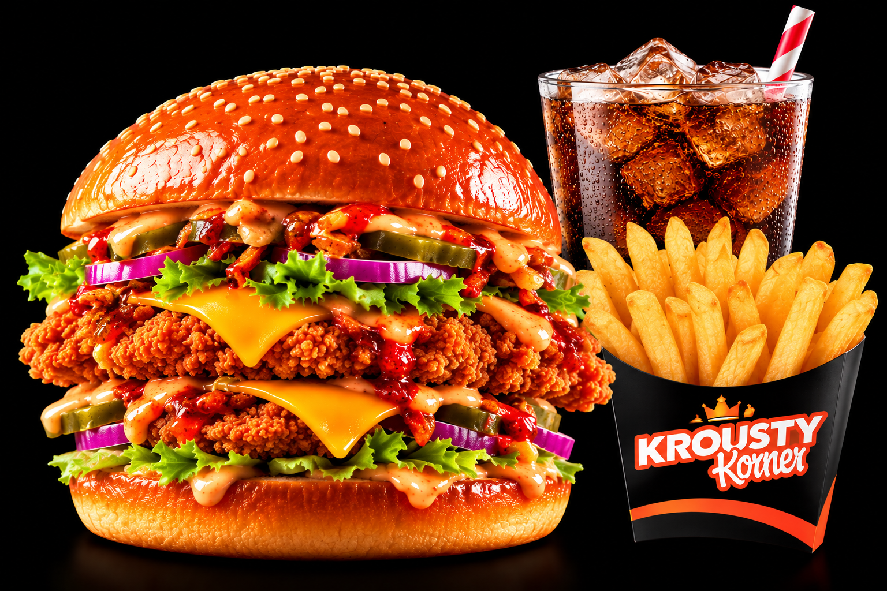
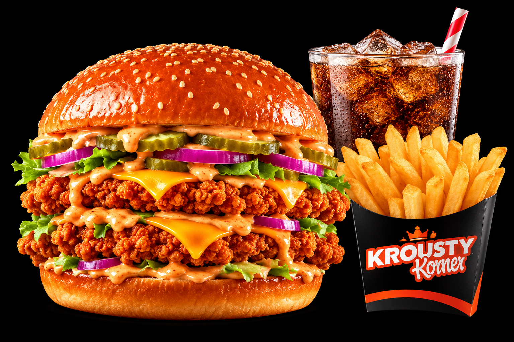

PLAT
Riz Krousty Korner
Riz parfumé, poulet croustillant, sauce Krousty, oignons frits.
10,00 €
Poulet croustillant, burgers généreux, salades fraîches et notre sauce Krousty signature — pour les grosses envies.

Big brioche buns. Crunchy chicken. Melty cheddar. Fresh toppings. Sauce on sauce. That's the Krousty way.
Voir la carte ↗
Krousty Korner brings together crispy chicken and generous street-food style plates in a bold black-and-orange universe.
From a quick 3-piece tender box to a loaded double chicken burger, our menu is designed to hit the spot — day or night.
Krousty Korner est un restaurant situé au 41 Bd Poniatowski, 75012 Paris. Découvrez nos burgers au poulet croustillant, Big Korner, tenders, riz Krousty et salade César. Consultez la carte, les prix et les horaires avant votre visite.